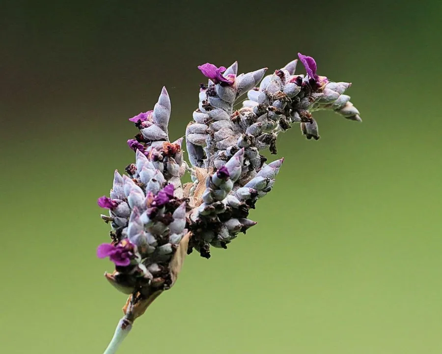

水生植物 · 植物界
再力花 Thalia dealbata

竹芋科多年生挺水草本，花序高挺、紫色小花成串，叶片宽大似美人蕉，是人工湿地和园林水景的常用植物，原产美洲。
- 分类
- 门被子植物门纲木兰纲目姜目科竹芋科属再力花属
- 栖息环境
- 沼泽、湿地与浅水河岸，喜温暖、阳光充足
- 地理分布
- 原产美洲，中国南方及各地园林水景广泛栽培
- 保护级别
- 暂无评估
物种志
再力花为竹芋科再力花属多年生挺水草本，株高 1–2 米，具粗壮根状茎。叶片基生，卵状披针形，长 30–50 厘米，形似美人蕉叶，有长叶柄。花小，紫色，成对生于高挺的花序上，花期 5–10 月；果实为蒴果。
再力花原产美洲的沼泽和湿地，喜温暖、阳光充足和浅水环境，耐污力强，生长迅速。它花序高挺、花色紫艳，叶片宽大，是园林水景和人工湿地中常见的观赏植物，常与鸢尾、美人蕉搭配种植；根系能吸收水中氮磷、净化水质。再力花在南方可露地越冬，栽培以分株繁殖为主，需注意控制其蔓延，避免侵占其他水生植物的空间；冬季可剪除枯叶，来年春季重新萌发。
形态与习性
- 株高1–2 米，花序高挺
- 花期5–10 月，花小，紫色
- 果期花后结蒴果
- 光照喜充足阳光
- 水分浅水，水深 10–40 厘米
- 土壤肥沃的沼泽土或塘泥
- 繁殖分株繁殖
- 主要用途园林水景、人工湿地净化
趣味知识
- 再力花的花序高挺，紫色小花成对排列，是水景中的竖向点缀。
- 它的叶片宽大、形似美人蕉叶，株形高大醒目。
- 再力花耐污力强、根系吸收氮磷，常用于人工湿地净化水质。
- 它原产美洲，在南方可露地越冬，栽培以分株繁殖为主。